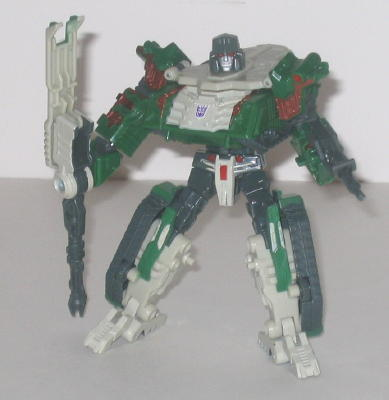
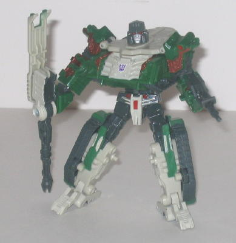

Allegiance : Decepticon
Difficulty of Transformation : Medium
Color Scheme : Moderately dark green, dark dull grayish blue, glossy tannish off-white, and some transparent red, metallic copper, and red
Individual Rating : 8.3
Size
: Voyager-priced Deluxe 2-pack
Comes with
: "Ultimate Battle" DVD
with clips of the
Armada
,
Energon
, and
Cybertron
shows with a voiceover by Optimus Prime, sort of a quick intro into the
Transformers universe-- nothing overly special, really
Overall Rating
: 7.5
 Megatron
Megatron

Allegiance
: Decepticon
Difficulty of Transformation
: Medium
Color Scheme
: Moderately dark green,
dark dull grayish blue, glossy tannish off-white, and some transparent
red, metallic copper, and red
Individual Rating
: 8.3
In this 2-pack meant
as an "introduction into the Transformers universe", according to the dudes
in charge of the TF brand, Megatron's a somewhat banged-up-looking tank.
There's tons of mold detailing everywhere, including exposed "pipes" and
bolted-on "armor plates". The layout of the figure is also a tad asymmetrical,
making it look like he's been through his fair share of fights and had
repairs made in a manner that makes him look a little uneven. All in all,
it comes together to form a fierce-looking tank mode, which is of course
perfect for a Decepticon leader. Even the main turret has "claws" at the
end of it (the turret does not fire a missile, however). The green and
blue-gray color scheme is perfect for a tank, and the tannish off-white
helps provide a nice contrasting color to the others while still being
close enough to the original Megatron's silvery-white to keep the toy easily
recognizable as Megatron in robot mode. The metallic copper paint apps
almost look like exposed tank innards compared to the green, and go extremely
well with the other colors. As for movement, the main gun can move up and
down, and the whole turret assembly can rotate around. There are two problems
I have with this mode, however. The first is that the robot feet stick
out rather blatantly from the back end. Megatron comes with his feet bolted
in the wrong way (it's no biggie, all you do is unscrew the feet bolts,
swap the feet, and screw them back in), which exacerbates the problem,
but even after it's fixed the feet are still rather obvious. Also, the
tank looks a bit too skinny-- it really needs to be wider proportionally,
as it lacks a bit of bulk as-is.
In robot mode, Megatron
still looks pretty good, but he does suffer from a pretty major flaw--
namely, his right arm. There's no fist to speak of, molded-in or otherwise,
and it ends in some kind of weird spinner-thing made up of his main gun
and part of the tank turret. By pressing the transparent red button on
the middle of that arm, the end of the arm can spin around, but given that
it doesn't really look much like a weapon, it just ends up looking weird.
The spinner-thing also has a tendency to come off its rather loose arm
joint during transformation. The left arm looks more traditional, however,
complete with molded-in lower arm detailing and a handheld (non-firing)
gun. The rest of Megatron looks very nice-- his legs look great proportionally,
though the fact that the front of the feet are a little smaller than the
heels looks a tad odd. The chest sticks out a bit, but not too much, and
the head sculpt is really, really nice-- even better than the
"real"
Classics Megatron's
head sculpt, in fact, as the "helmet" around the
face isn't so big it dwarfs every other feature of the face, not to mention
the fact that he has no weird unibrow and transparent red light piping
for the eyes that works very well. Megatron also has great articulation--
he can move at the shoulders (at three points), the elbows (in one point
on the right arm that just lets him rotate the lower arm, and a more normal
point of back-and-forth articulation on the left arm), the waist, the hips
(at two points), the knees, and the ankles, so you can get a ton of good
poses out of him.
Overall, Megatron is
a pretty nice toy, with only a few major flaws, chief among them his really
weird right arm. Not quite as good as the Voyager Classics Megatron, but
still a fine toy. Mildly recommended.
 Optimus
Prime
Optimus
Prime
Allegiance
: Autobot
Difficulty of Transformation
: Easy
Color Scheme
: Light milky gray,
dull brick red, dull dark blue, and some silver, black, transparent light
purplish blue, yellow, gunmetal gray, and white
Individual Rating
: 6.7
Unlike the
"real"
Classics Voyager Optimus
, Ultimate Battle Optimus Prime keeps his more
old-styled rectangular truck cab appearance. However, this version of Optimus'
truck mode is far, FAR inferior to the
original
G1 version's
. Honestly, the only thing that's really good about this
mode is the neat little rotating gun platform made out of the handheld
rifle. Oh, and there's plenty of mold and paint detailing, right down to
the little "rivets" on the sides of the truck. Everything else about this
mode is horribly designed, however. For one, yes, the robot legs form the
rear of the truck as usual, but the upper legs don't slide into the lower
legs at all, and since they're just sticking out in the middle of everything
like so, it's painfully obvious that where his legs are in this mode. Also,
the waist hinge that is used during transformation is too loose, which
means that when held up in the air by his front end, the back end just
flops downwards. Another big downside is that the back of his robot head
is really obvious on the top of this mode. Then there's the fact that,
although when viewed directly from the side it's not so bad, when viewed
from a diagonal or frontal angle the cab looks horribly mis-proportioned.
The front wheel pieces stick out from the bottom and make that part of
the cab noticeably wider than the rest. The arms are also painfully obvious,
given that don't fit quite as well into their set tabs as they should and
thus when looked at from a frontal view, you can see little gaps in the
vehicle headlights. Also, the arms stick out farther at the sides than
the top portion of the cab, but not quite as much as the bottom front-wheel
pieces, so Optimus' cab mode looks three-tiered in how wide it is, which
is really, really odd. Another complaint to add to the mix is that, yes,
Optimus has his traditional "red, grey, and blue" color scheme, so it certainly
doesn't clash, but all of the colors are very dull, and really don't catch
the eye at all. Making them a tad brighter like on the Classics Voyager
Optimus would have looked better, in my opinion.
Optimus Prime's robot
mode looks MUCH better than his vehicle mode, thankfully, and is definitely
almost a carbon copy of his traditional G1 form, with the difference really
only being in the mold detailing. His main action feature is triggered
by a button sticking out of his back where, if pressed, will cause Prime's
entire upper body to swing around in a circle, like he's doing a big swipe
at a Decepticon. It's fairly fun and not too intrusive, seeing as how when
you want the upper body to be stable instead of swinging around all the
time, all you have to do is just tug the black button back a little and
everything locks in place. His gun looks really cool, and I do like how
his truck headlights form the back of his hands, sort of like brass knuckles.
Getting his front wheels to fold up into his lower torso is also pretty
creative, although the toy certainly pays for it in vehicle mode, as mentioned
earlier. He also has great articulation-- he cam move at every major point
except the waist, and given that he's not back heavy, you can get a ton
of cool poses out of him. The only thing I'm not really fond of in this
mode is that Optimus' headsculpt is definitely "off". It's too narrow proportionally,
for one thing, and the optics are a little too big, like he's perpetually
scared or something. The light piping for the eyes does work really well,
though.
Overall, Optimus Prime
has a great robot mode, but an incredibly weak and badly designed vehicle
mode. A greater contrast in quality between two modes of a Transformer
there aren't many of.
The Ultimate Battle Optimus vs. Megatron set isn't up to the standards set by the "mainline" deluxe and voyager Classics, sadly. Individually, Megatron is a fine toy, albeit with a weird arm, and Optimus looks pretty good in robot mode, but his vehicle mode is a sad mess. If you have the money, I'd opt to get the Voyager Prime & Megatron toys instead, even though they cost twice as much-- especially since several different quality control problems have been reported with these toys. That said, they still aren't outright bad toys, especially Megs.
Review by Beastbot